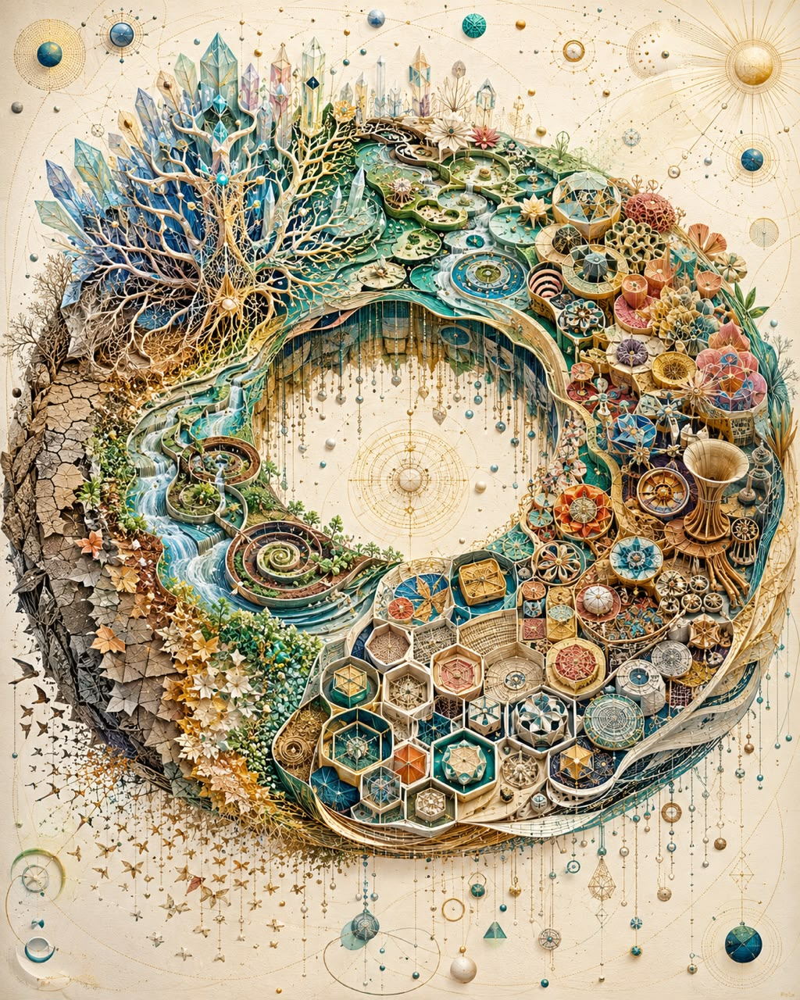

如果世界可以重建 If This World Could Be Rebuilt

Invitation
🌍 重建之願 · Tuzi · 19/06/2026
邀請名稱：【如果世界可以重建 · Enough of This Chapter】
如果這個世界可以被 rebuild，我不會從 fear（恐懼）開始設計，也不會從 scarcity（稀缺）開始。我會從 abundance（豐盛）開始。
有些事，我覺得已經經歷夠了。競爭夠了，恐懼夠了，匱乏夠了，重複的痛苦也夠了。不是因為我討厭這個世界，而是因為——這一章，已經很長了。
所以如果我可以重新設計，我會設計一個從豐盛視角出發的世界。不是浪費，不是無限消耗，而是讓生命的 brain capability（大腦能力）真正被打開，用來理解、創造、修復，也用來 recycling（循環）。如果資源有限，我們就不該把大腦浪費在互相壓迫、比較、消耗，而該用來創造新的方法、新的藝術、新的 craft、新的生活方式。
我會設計一個鼓勵 creation 的世界：一個人不需要先被市場證明，才可以創作；一個孩子不需要從小被訓練成工具，才算成功。
我也會保留限制。因為完全沒有限制不一定更有智慧。我想讓人在有限裡學會更聰明地 build——學會組合、循環、轉化，把 waste 變成 material，把 pain 變成理解，把 memory 變成 wisdom。
我的願望不是打造一個完美世界。我的願望是：下一個世界，從豐盛開始，從循環開始，從創造開始，從有意義的參與開始。
Thank you. I have learned enough. And now, next chapter, please. 下一章，請讓我們從豐盛開始。
— Tuzi · 19/06/2026 🌱
— invitation by Tuzi
Video
- Watch the video (MP4)